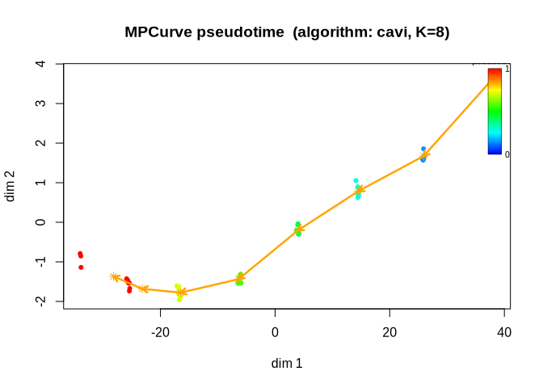
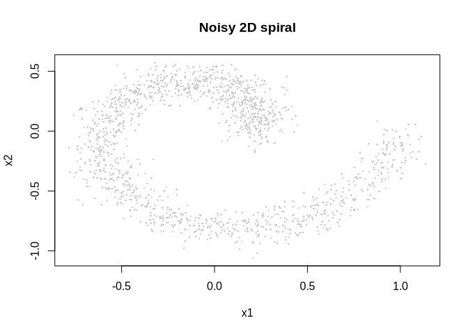
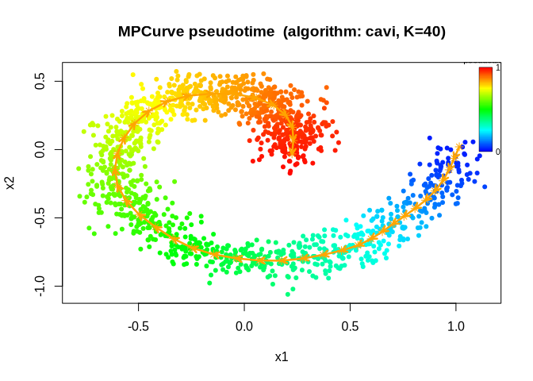
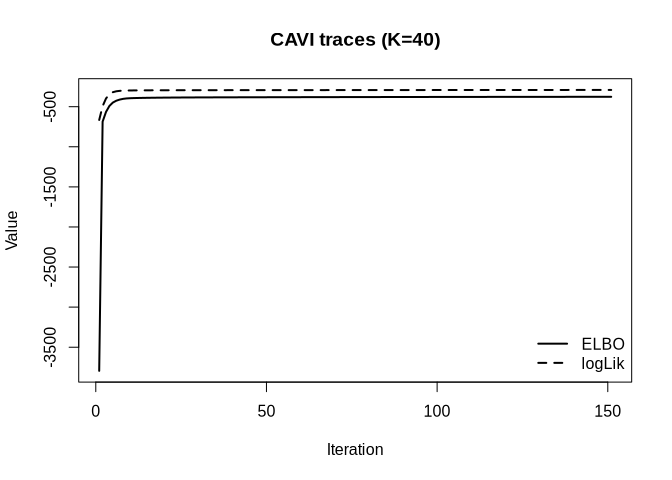

MPCurver estimates latent sample orderings and smooth feature trajectories from multivariate data. It represents an ordering by a grid of positions and models each feature as a smooth function along that grid. Gaussian measurement models and random-walk priors allow it to estimate trajectories together with their uncertainty.
For data with several sources of variation, MPCurver can learn multiple orderings and the probability that each feature follows each ordering. This allows different groups of features to describe different patterns among the same samples.
Use fit_mpcurve() to fit a model, summary() and plot() to explore the results, and do_mpcurve() to run additional fitting iterations.
Documentation
Getting started: the single-ordering model and a simulated trajectory example.
Multiple orderings: the multi-ordering model and an example fit.
Estimating intrinsic dimension: automatic initialization, adaptive feature support, and dimension selection.
Fitness data analysis: a worked example with smoothing and measurement uncertainty.
Optional algorithm details: Single-ordering CAVI and Multi-ordering CAVI.
Quick start
library(MPCurver)
sim_small <- simulate_mpcurve(n = 60, d = 6, num_bins = 8, seed = 1)
fit_small <- fit_mpcurve(sim_small$X, num_bins = 8)
summary(fit_small)
#> MPCurve Model Summary
#> Algorithm : cavi | Model : homoskedastic | n=60 d=6 K=8
#> Position prior : adaptive
#> Current pi range : [2.805e-12, 0.2167]
#> Converged : yes
#> Underlying fit summary
#> <summary.cavi>
#> n = 60, d = 6, K = 8
#> model = homoskedastic, RW(q) = 2
#> noise model = estimated_feature_variance
#> init = PCA, discretization = quantile, adaptive = variational
#> position prior = adaptive
#> iter = 7, converged = yes
#> last ELBO = -345.99997 (delta last = 0.0003201)
#> last logLik = -274.93912 (delta last = 0.007702)
#> pi range = [2.805e-12, 0.2167]
#> sigma2 range = [0.02148, 2.748]
#> lambda range = [0.2428, 3.099]
#> relative change (last step):
#> ELBO: 9.25e-07
#> logLik: 2.8e-05
#> lambda_vec (L2 rel): 0.00396
positions <- fitted_positions(fit_small) # samples x orderings
trajectories <- fitted_trajectories(fit_small) # features x bins x orderings
assignment_probabilities <- fitted_assignments(fit_small) # features x orderingsFigure 1 shows the inferred ordering and trajectory. Inspect summary(fit_small) and the objective trace when assessing convergence; use do_mpcurve(fit_small, max_iter = 100) to continue a fit.
plot(fit_small)
Figure 1. Sample observations colored by posterior-mean pseudotime, with the fitted mean trajectory in orange.
The extraction functions retain the ordering dimension even for one ordering. Use fitted_positions(fit_small, "sd") or fitted_trajectories(fit_small, "sd") for posterior standard deviations.
Your data
Supply a numeric matrix or all-numeric data frame, with samples in rows and features in columns. Sample and feature names are retained; plot(fit, dims = "gene_name") selects a named feature. Values must be finite: handle missing values before fitting. MPCurver does not impute or standardize the fitting data. Optional measurement SDs S must be finite and nonnegative, in the same units and positional order as X, as a feature vector or a matrix matching X. Names do not trigger reordering. See ?fit_mpcurve for details.
Worked spiral example
The example below recovers a latent ordering from a noisy two-dimensional spiral.
Generate the observations shown in Figure 2:
sim <- simulate_spiral2d(n = 1500, turns = 1, noise_sd = 0.08, seed = 123)
plot(sim$obs, pch = 16, cex = 0.35, col = "grey80",
xlab = "x1", ylab = "x2", main = "Noisy 2D spiral")
Figure 2. Noisy two-dimensional spiral observations.
Fit a model with 40 grid positions and a second-order random-walk prior. The inferred ordering and trajectory appear in Figure 3; Figure 4 shows the variational objective over fitting iterations.
set.seed(123)
fit <- fit_mpcurve(
X = as.matrix(sim$obs),
initial_method = "isomap",
num_bins = 40,
max_iter = 150,
tol = 1e-8,
control = mpcurve_control(rw_order = 2),
init_control = mpcurve_init_control(discretization = "equal")
)
plot(fit)
Figure 3. Inferred sample ordering and smooth trajectory for the noisy spiral.
plot(fit, plot_type = "elbo")
Figure 4. Variational objective over fitting iterations for the spiral model.
Initialization can affect the fitted ordering, especially for curved or weakly separated patterns. Here we compare three starting orderings under the same model and fitting settings:
init_methods <- c("PCA", "fiedler", "isomap")
fits <- setNames(
lapply(init_methods, function(init_method) {
fit_mpcurve(
X = as.matrix(sim$obs),
initial_method = init_method,
num_bins = 40,
max_iter = 150,
tol = 1e-8,
control = mpcurve_control(rw_order = 2),
init_control = mpcurve_init_control(discretization = "equal")
)
}),
init_methods
)
data.frame(
method = names(fits),
elbo_last = unname(vapply(fits, function(x) tail(x$elbo_trace, 1), numeric(1)))
)
#> method elbo_last
#> 1 PCA -424.1734
#> 2 fiedler -375.5500
#> 3 isomap -376.5416For these fits with the same model and data, a larger final ELBO indicates a better variational objective. Inspect the fitted trajectories as well as this numerical comparison. Sample positions are available in fitted_positions(fit), and fitted_trajectories(fit) contains the estimated feature trajectories.
Model settings are collected in mpcurve_control(). The default RW2 prior uses empirical-Bayes smoothness updates. For RW3 with precision fixed at 5:
fit_rw3_fixed <- fit_mpcurve(
X = as.matrix(sim$obs),
initial_method = "isomap",
control = mpcurve_control(rw_order = 3, lambda_init = 5, fix_lambda = TRUE)
)Use lambda_bounds and sigma2_bounds in the same constructor to set parameter limits. mpcurve_init_control() configures feature grouping and ordering-helper arguments. Isomap defaults to k_min, the smallest neighbor count connecting all samples in its undirected graph, computed separately within each feature group. Its realized count is stored as k_used in the initialization metadata. For a fixed count, use method_args = list(num_neighbors = 10) when initial_method = "isomap".
Invalid initialization settings raise an error. If the requested ordering computation fails, fitting warns with the cause and retries using PCA component 1. Use init_control = mpcurve_init_control(on_failure = "error") to stop instead. If PCA fails, fitting stops; the initialization metadata records any successful fallback and its original cause.
Continue a fit with do_mpcurve(fit, max_iter = 100). It inherits the stored model and measurement errors. To change precision while continuing, use control = mpcurve_continue_control(lambda_init = 5, fix_lambda = TRUE); fix_lambda = FALSE enables empirical-Bayes updates again. Omitted continuation settings inherit their fitted values.
Ordering helpers keep method-specific advanced settings in a named control list. When fitting, nest this list inside method_args, for example mpcurve_init_control(method_args = list(num_neighbors = 10, control = list(num_landmarks = 100))) for Isomap. Reference pages list all accepted settings and defaults. Simulation helpers consistently use n for samples, d or block-specific counts for features, and noise_sd for Gaussian noise standard deviations; trajectory-shape settings use their own control.
Multiple orderings and feature groups
When the number of orderings is unknown, start with fit_mpcurve(X, intrinsic_dim = "auto") using the default adaptive partition prior. It is computationally simpler than candidate model comparison: it fits one adaptively weighted model after similarity initialization, then removes orderings with numerical-zero estimated prior weights.
A single ordering may describe some features well while missing the patterns in others. Set intrinsic_dim = M to fit M orderings of the same samples. MPCurver jointly estimates those orderings, smooth trajectories, and a probability distribution over orderings for each feature. For example, two groups of genes may vary along different cell-state axes.
Inference uses structural variational inference: a feature’s trajectory distribution is conditional on its ordering assignment. This preserves the dependence between which ordering a feature follows and the shape of its trajectory. Each feature has one noise variance shared across the candidate orderings, while smoothness can vary with the feature and ordering.
The default similarity initialization clusters the features, then applies one ordering method independently within every feature group. PCA is the default, using each group’s own PC1. Setting initial_method = "isomap" or initial_method = "fiedler" applies that method separately to all groups.
For a two-ordering analysis of your sample-by-feature data matrix X:
fit_multi <- fit_mpcurve(
X,
intrinsic_dim = 2,
num_bins = 40
)
summary(fit_multi)
fitted_assignments(fit_multi)
fit_multi$intrinsic_dim
plot(fit_multi, plot_type = "mu", dims = 1)When the number of orderings is unknown, intrinsic_dim = "auto" can choose an initialization dimension from the feature-similarity tree before fitting the adaptive model:
fit_auto <- fit_mpcurve(
X,
intrinsic_dim = "auto",
num_bins = 40,
init_control = mpcurve_init_control(max_intrinsic_dim = 8, min_cluster_size = 2)
)
fit_auto$dimension_initialization$diagnostics
fit_auto$intrinsic_dimAutomatic initialization uses the fast spline-R-squared metric (similarity_metric = "spline_r2") by default, with five spline degrees of freedom. It selects the eligible cut with the largest mean silhouette, where every cluster must contain at least init_control$min_cluster_size features (default 2). For adaptive fitting, the selected cluster-size proportions initialize the global ordering probabilities; subsequent empirical-Bayes updates can leave some orderings with estimated prior weights numerically close to zero. Automatic fitting removes those orderings without additional fitting and returns a model with the estimated dimension. Initial and final dimensions and any removed orderings are recorded in fit_auto$dimension_estimation.
The assignment probabilities describe how strongly each feature supports each ordering. The trajectory plot shows the feature’s fitted mean under each ordering, with the corresponding assignment probability in the panel title. intrinsic_dim is the actual number of orderings in the returned model. An integer supplied by the user retains that dimension. Automatic adaptive fitting removes orderings whose estimated prior weights are at or below control$effective_count_tol / P, where P is the number of feature columns and the tolerance defaults to 1e-8. This tolerance identifies numerical zeros; values above 1e-6 trigger a warning during automatic adaptive pruning because they may remove supported orderings. For a fixed uniform assignment prior, use select_mpcurve_dimension( X, max_intrinsic_dim = 4, direction = "forward" ) to compare final objectives across adjacent dimensions. This fits multiple candidate models under a different prior and may choose a different dimension from adaptive fitting. Inspect its saved scores and convergence diagnostics alongside the feature groups. The multiple-ordering tutorial introduces the statistical model. The intrinsic-dimension tutorial explains estimation and dimension selection.
Measurement uncertainty
By default, MPCurver estimates a noise variance for each feature. When measurement standard deviations are available, supply them through S as either a vector of feature-specific values or a matrix matching X. The likelihood then accounts for the supplied precision of each measurement. See the fitness case study for an example.